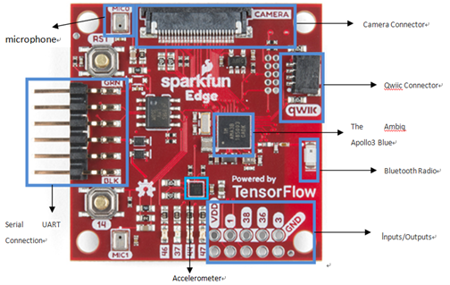
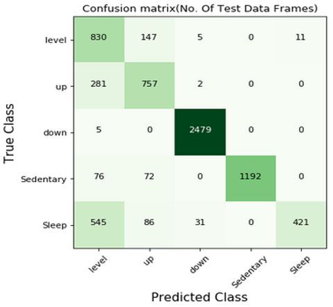
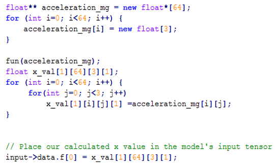
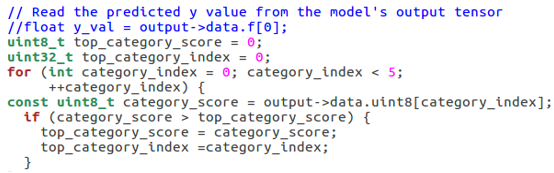
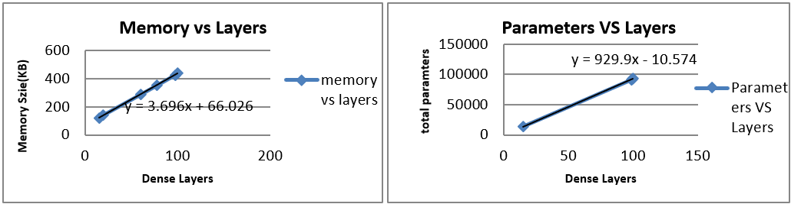

The aim of this project is to design a neural network model to recognize human activities and then use Tensorflow Lite which is a kind of deep learning framework focused on embedded devices to deploy the designed model into the microcontroller. The following objectives should be done:
- Follow the tutorial to get the simple audio recognition with the CNN Model and learn Tensorflow Lite about how to load deep learning into the device;
- Design the deep learning models for human activities recognition (HAR) and make sure it can be worked in the microcontroller;
- Using Make to build binary file and deploy it to the microcontroller;
- Measure model and microcontroller in terms of accuracy, power consumption and memory footprint;
- Conclusion.
You can find the codes from this:
Follow the tutorial to get the simple audio recognition with the CNN Model and learn Tensorflow Lite about how to load deep learning into the device
We choose the SparkFun Edge Development Board - Apollo3 Blue as the Development Board. You can run your demo by following the set-up of AI Speech Recognition with TensorFlow Lite for Microcontrollers and SparkFun Edge. If you can interact with the development board by lighting colored LEDs. Then we can go to train our own models.
Design the deep learning models for human activities recognition (HAR) and make sure it can be worked in the microcontroller
Refering to the manual of SparkFun Edge Development Board - Apollo3 Blue, it has ARM Cortex-M4F processor with direct memory access and 48MHz CPU clock, 96MHz with TurboSPOT™ and also gets 1MB Flash and 384KB SRAM. We should carefully construct our neural networks by limiting the memeory within 1Mb, better to be smaller than 1Mb . Finally, we chose one simple CNN architecture and trained it on our human activity data that collected by an accelerometer sensor.
Tips: If you want to run your model faster, you can set the loss function as mean-square-error. Because cross-entropy needs more computing resource. If you want to run your model faster, you can set the loss function as mean-square-error for binary classification.
|  |
|
||||||||||||
Using Make to build binary file and deploy it to the microcontroller
If you have trained your model, you should get a model file (*.pb or *.h5). But it also should be transformed to *.bin file. Following the manual Train a Simple Audio Recognition Model, we can convert the TensorFlow Model to a TensorFlow Lite Model.
Tips: It is better to quantize the model to a 32-bit model, you can follow the Generate a TensorFlow Lite Model to get a 32-bit TensorFlow Lite Model.
1 | Install xxd if it is not available |
Measure model and microcontroller in terms of accuracy, power consumption and memory footprint
Befor debugging our device, we should (1) set the port and the sampling rate, (2) initialize the inut vector and (3) choose the lose function to avoid errors.
| Input Vector |
 | |
| Output Vector |
 | |
When constant.cc is replaced with the accelerometer main.cc code, the function cannot be named as main, because main.cc file has existed which used to work with the input, model and all other things together. In order to identify the two main files, the existed main file in the beginning is called as original main. Therefore, the function name in constant.cc and constant.h both should be changed. First way is to use the ‘fun’ function to replace the ‘main’ function in the constant files. And then the original main has set a pointer 2D array to call the fun function to get the accelerometer data which shape is (64, 3). The second way is to put the codes which are in the constant files into the original main in order to get the accelerometer data as input directly. When the all recorded data are tried to put into the input->data.f, the error is happened in figure 34. In order to make binary file quickly, the error is put away for the moment. The input is only used the last recorded data which is changed as a 4D tensor as the trained model input.
In the initial example, the original output is only one value and the type is float. But the output of the designed model is a vector containing the scores for each kind of prediction,and we should figure out what the highest scoring category is. Besides, when it finds the highest score, the corresponding index would be the output of current data. The output values can only be 0, 1, 2, 3, 4 which correspond with the 5 labels–level, up, down, sedentary and sleep.
Tips: When you are debugging the programe, you will encounter many problems, for example, some functions in constant.cc cannot be recognized. You should added them into the makefile.inc, or add extern”c” to include the c file into the main.cc file as well as the other headers which are included in the main file.
Since the FLASH for this Sparkfun board is 1MB, and from the formula which shows in figure, it is easy calculated that the model can have 259 ((1024-55.026)/3.696) dense layers including the last output layer. And the maximum parameters are about 240833 (929.9*259-10.574) on the premise that the parameters of each layer do not exceed 1000. Therefore, the maximum number of layers is totally satisfied almost all models while the units or neurons should be set carefully.
Conclusion
The presented study using the microcontroller to predicts the human activity. The CNN model is firstly set according to the existing literature related to the only 3D accelerometer as the input data. Considered the limit memory footprint, the first kind of designed model has 95% accuracy. And after the quantization, it still keeps the high accuracy. However, due to the limit tensor area size and few operators in the microcontroller, the group of input data is reduced from 64 samples to the 16 samples and the model is changed again. The finally model which can be used in the microcontroller has 82% accuracy. The microcontroller is debugging success which means it is able to use its accelerometer to get the data and then analyze them to recognize the human activity by lighting the different LEDs.